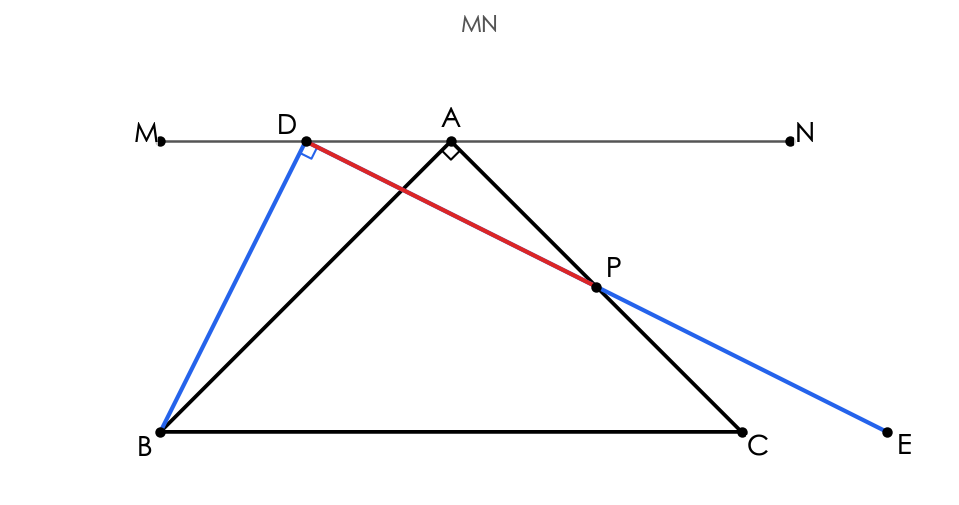
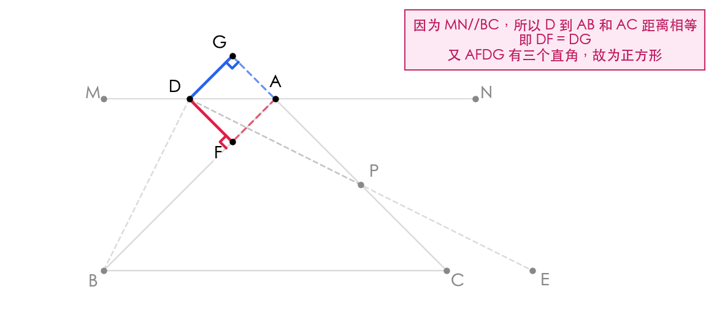
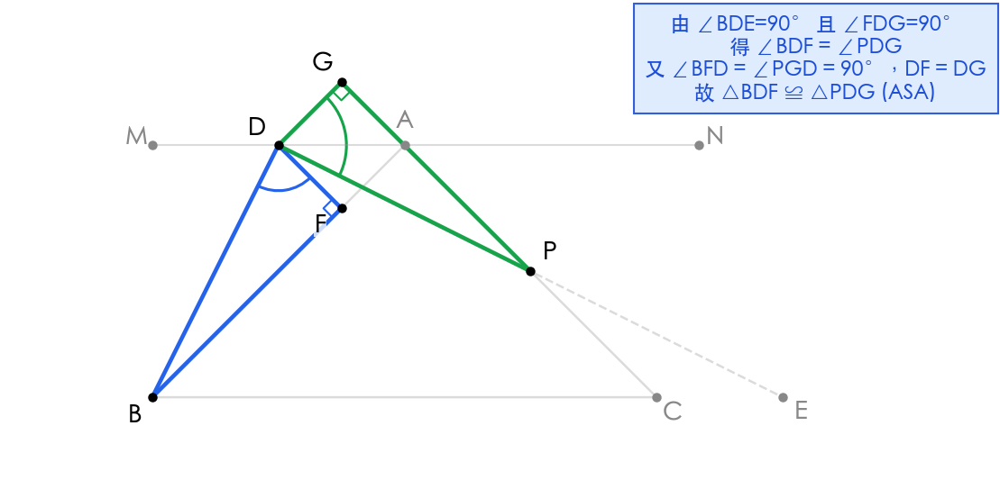
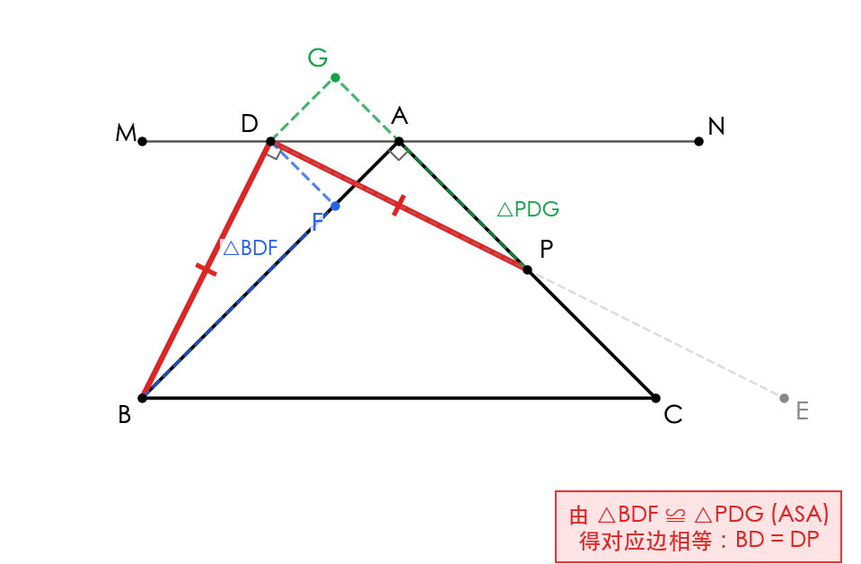
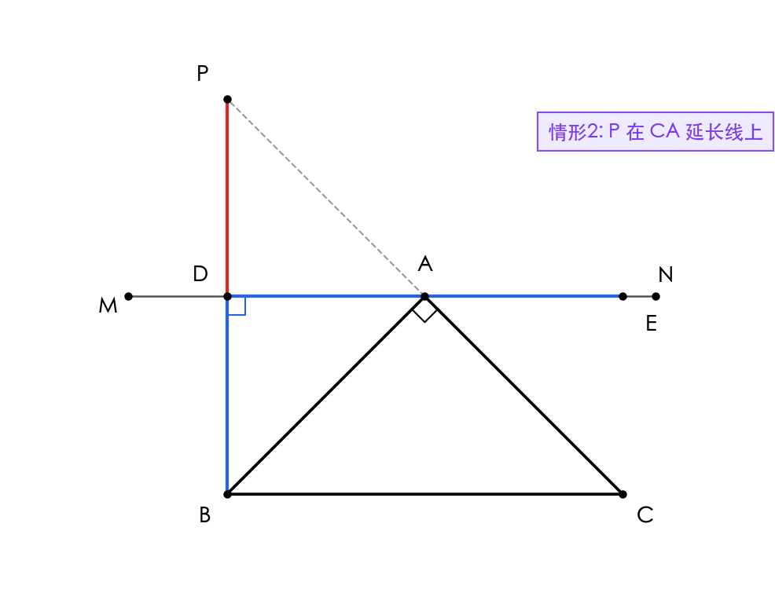
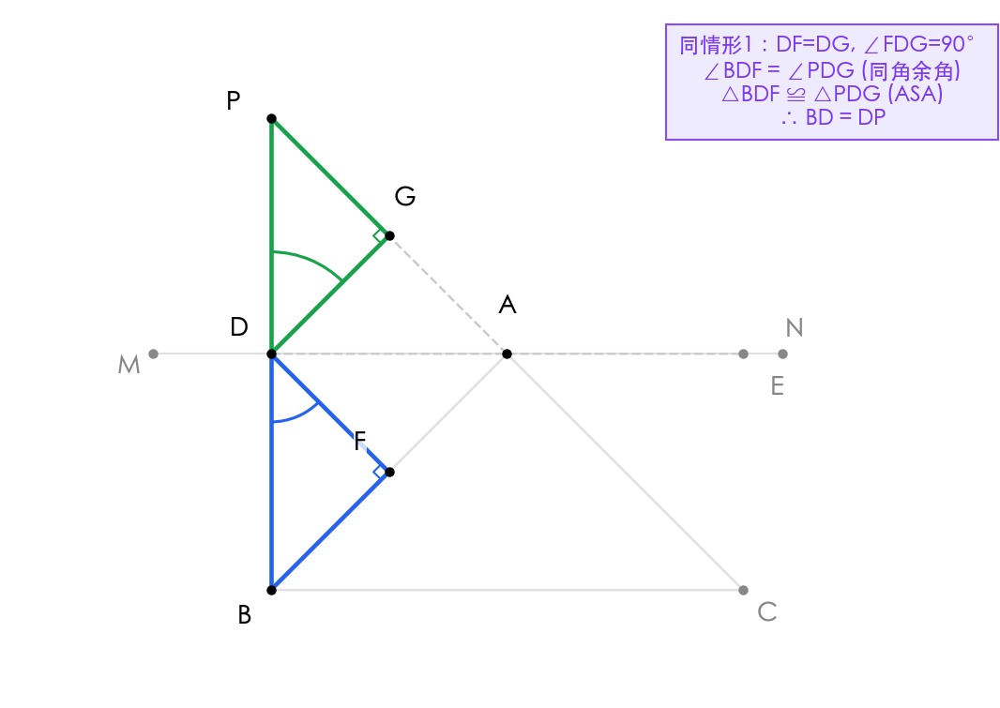
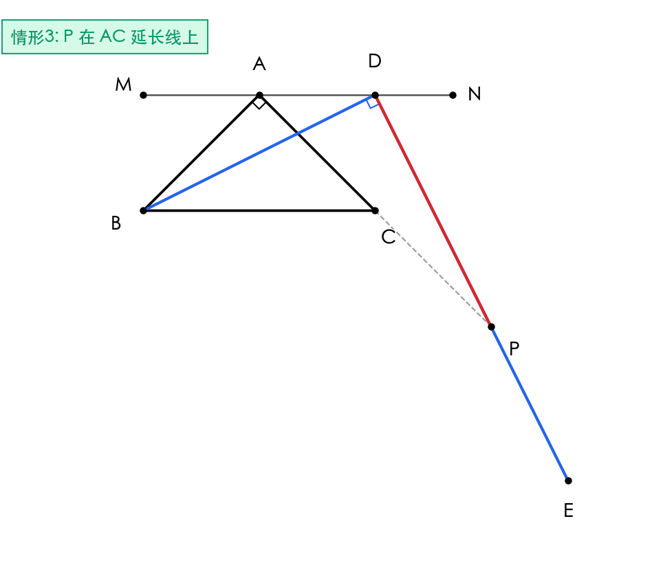
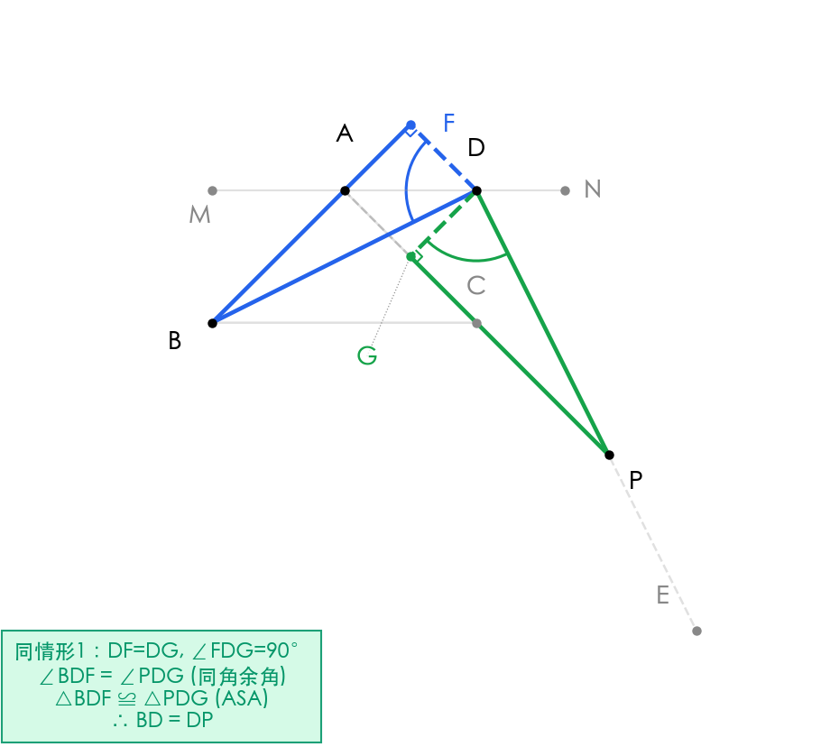

题目
在等腰直角三角形 △ABC 中，∠BAC = 90°，AB = AC。直线 MN 过点 A 且 MN // BC。点 D 在直线 MN 上（不与点 A 重合），DB 与 AC 交于点 P，且 ∠BDE = 90°。求证：BD = DP。

作辅助线，构造正方形 AFDG

过点 D 作 DF ⊥ AB 于点 F，作 DG ⊥ AC 于点 G。
因为 MN // BC，且 △ABC 是等腰直角三角形（∠BAC = 90°），所以 ∠BAM = ∠ABC = 45°，∠CAN = ∠ACB = 45°。即 MN 方向使得 D 到 AB 和 AC 的距离相等：DF = DG。
又因为 DF ⊥ AB，DG ⊥ AC，且 AB ⊥ AC，所以四边形 AFDG 是矩形。结合 DF = DG 可知 AFDG 是正方形，从而 DF = DG 且 ∠FDG = 90°。
💭 思考问题
证明角度相等关系

由已知条件 ∠BDE = 90° 和正方形性质 ∠FDG = 90°，可得：
∠BDF + ∠FDP = ∠PDG + ∠FDP = 90°
因此 ∠BDF = ∠PDG（同角的余角相等）。
又由辅助线作法可知：
- ∠BFD = 90°（DF ⊥ AB）
- ∠PGD = 90°（DG ⊥ AC）
- DF = DG（已证正方形性质）
💭 思考问题
利用 ASA 全等得出结论

在 △BDF 和 △PDG 中：
① ∠BFD = ∠PGD = 90°
② DF = DG（正方形性质）
③ ∠BDF = ∠PDG（已证）
根据 ASA（角边角） 判定定理：
由全等三角形对应边相等，得：
💭 思考问题
情形2：P 在 CA 延长线上（配置图）

当点 P 在 CA 的延长线上时，同样过点 D 作 DF ⊥ AB 于点 F，作 DG ⊥ AC 于点 G。
因为 MN // BC，且 △ABC 是等腰直角三角形（∠BAC = 90°），所以 ∠BAM = ∠ABC = 45°，∠CAN = ∠ACB = 45°。点 D 到 AB 和 AC 的距离相等：DF = DG。
又因为 DF ⊥ AB，DG ⊥ AC，且 AB ⊥ AC，所以四边形 AFDG 是矩形。结合 DF = DG 可知 AFDG 是正方形，从而 DF = DG 且 ∠FDG = 90°。
💭 思考问题
情形2：ASA 全等证明

由已知条件 ∠BDE = 90° 和正方形性质 ∠FDG = 90°：
∠BDF + ∠FDP = ∠PDG + ∠FDP = 90°
因此 ∠BDF = ∠PDG（同角的余角相等）。
又 ∠BFD = ∠PGD = 90°，DF = DG，故：
由全等三角形对应边相等，得：
💭 思考问题
情形3：P 在 AC 延长线上（配置图）

当点 P 在 AC 的延长线上时，同样过点 D 作 DF ⊥ AB 于点 F，作 DG ⊥ AC 于点 G。
同理可证 DF = DG，且 AFDG 为正方形，从而 DF = DG 且 ∠FDG = 90°。
此时 P 在 C 的右侧，DB 与 AC 的延长线交于点 P。图中以虚线表示 AC 延长线，红色线段 DP 表示交点。
💭 思考问题
情形3：ASA 全等证明

由 ∠BDE = 90° 和 ∠FDG = 90°，得 ∠BDF = ∠PDG。
又 ∠BFD = ∠PGD = 90°，DF = DG，故：
因此：
💭 思考问题
思路梳理
最终答案
BD = DP
解题流程
知识点
解题技巧
- • "见垂直想正方形"：当一点到两条互相垂直的线段距离相等时，常可构成正方形作为桥梁
- • "有直角找互余"：多个直角共存时，通过同角的余角相等建立角度联系
- • "垂线法"：涉及线段相等证明时，过某点向两边作垂线将分散条件集中处理